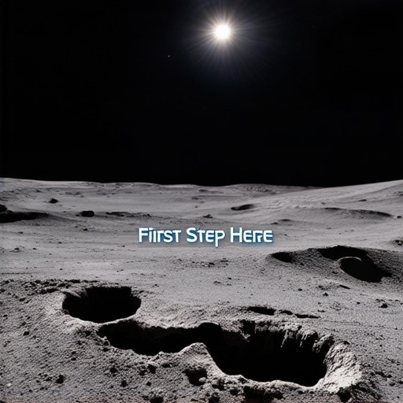
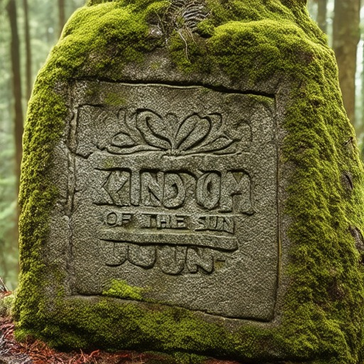
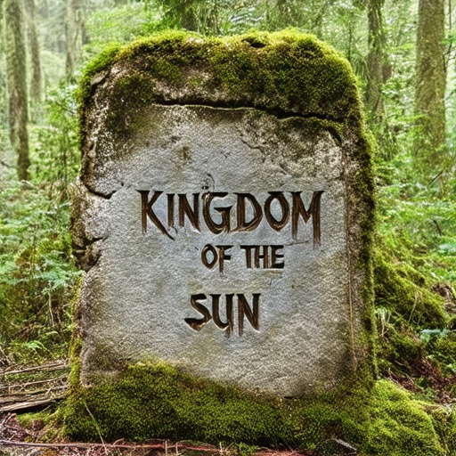

1Does the RL gain need prompt-specific changes?
RL post-training makes diffusion transformers better at rendering requested text, composing several objects and matching human preference. It updates weights, so it changes the activations differently for each prompt and each token. These skills depend on the prompt, so that seems necessary. We test whether it is.
2What is a steering vector?
A steering vector is a constant vector added to a model’s hidden states at inference. It changes the output and leaves the weights alone. We add one vector to every token of a block’s output.
Each block output has four vectors per token stream: one for each guidance pass (with the prompt, with the empty prompt) and each half of the sampling steps (early, late). Which vector applies depends only on the sampler, so every prompt, seed and token gets the same vectors. On SD3.5-M the full set has 288,768 parameters, 1.5% of the LoRA that Flow-GRPO trains for PickScore.
3How do we fit the vectors?
We fit the vectors so that the steered base model predicts the same velocity as the RL-tuned model.
Both models stay frozen. The loop needs no reward model and no sampling.
4How much of the RL gain do the vectors recover?
The fitted vectors recover 90.0–96.3% of the reward gain on six RL-tuned image models, and 89.8% and 111.9% on two RL-tuned video models.
Bars: share of the RL-tuned model’s reward gain over Base that Base + steering vectors reach, on the test prompts. Lines: paired 95% bootstrap interval. The orange line marks the RL-tuned model at 100%.
Table
| Base model | RL method | Reward | Gain of Base + steering vectors | Gain of RL-tuned | Share | 95% interval |
|---|---|---|---|---|---|---|
| SD3.5-M | Flow-GRPO | PickScore | +1.416 | +1.560 | 90.8% | [89.8, 91.7] |
| SD3.5-M | Flow-GRPO without KL | PickScore | +1.612 | +1.693 | 95.2% | [94.4, 96.1] |
| SD3.5-M | Flow-GRPO | OCR | +0.325 | +0.344 | 94.4% | [90.8, 97.9] |
| SD3.5-M | Flow-GRPO | GenEval | +0.260 | +0.271 | 95.9% | [92.0, 99.7] |
| FLUX.1-dev | Flow-GRPO | PickScore | +1.370 | +1.522 | 90.0% | [88.9, 91.1] |
| FLUX.1-dev | DanceGRPO | HPSv2.1 | +0.052 | +0.054 | 96.3% | [95.5, 97.2] |
| Wan2.1-1.3B | GenRL GRPO | HPSv3 | +1.465 | +1.309 | 111.9% | [106.5, 118.0] |
| Wan2.2-5B | VBVR-Pro RLVR | Rule score | +0.072 | +0.080 | 89.8% | [76.2, 105.6] |
Gains are raw reward points over Base, from the same prompts and starting noise.
Drag to compare. Each example starts from the same noise. The numbers are scores on the reward the model was tuned for.
Wan2.1-1.3B, GenRL GRPO on HPSv3 and VideoAlign
Test prompts. Each row starts from the same noise; click a clip to pause its row.
“A cute happy Corgi playing in park, sunset, surrealism style”
14 more videos
“A beautiful coastal beach in spring, waves lapping on sand, pixel art”
“a blue chair”
“a dog and a horse”
“a truck”
“A raccoon dressed in suit playing the trumpet, stage background”
“An astronaut feeding ducks on a sunny afternoon, reflection from the water.”
“A tropical beach at sunrise, with palm trees and crystal-clear water in the foreground”
“a zebra bending down to drink water from a river”
“a dog drinking water”
“a horse taking a peaceful walk”
“an elephant running to join a herd of its kind”
“A tranquil tableau of a tranquil lakeside cabin nestled among tall pines, its reflection mirrored perfectly in the calm water”
“The bund Shanghai, tilt down”
“a shark is swimming in the ocean, zoom in”
Wan2.2-5B, VBVR-Pro RLVR
Visual puzzles solved from a given first frame, on test instances.
“Pick the shape that continues a sequence of growing sizes”
Full prompt
The scene has two separated areas: a top SEQUENCE area and a bottom CHOICES area. In the SEQUENCE area, the shapes are the same shape and the same color, and their sizes strictly increase from left to right. First identify the constant size step between consecutive sequence shapes, then select the one correct option (out of 4) in the CHOICES area that continues the same shape, color, and size-increase pattern. Circle the correct option with a red circle and show the full process step by step. Only modify what the task requires; keep the background and any other element unchanged.
14 more videos
“Pick the shape that continues a large–small alternating sequence”
Full prompt
The scene has two separated areas: a top SEQUENCE area and a bottom CHOICES area. In the SEQUENCE area, the shapes are the same shape and the same color, and their sizes strictly alternate between LARGE and SMALL from left to right. First observe the size-alternation pattern and determine whether the next item should be LARGE or SMALL, then select the one correct option (out of 4) in the CHOICES area that continues the same shape, color, and large/small alternation pattern. Circle the correct option with a red circle and show the full process step by step. Only modify what the task requires; keep the background and any other element unchanged.
“Move two circles until they are concentric at the image center”
Full prompt
The scene shows two circles of different sizes at different positions. Keep both circles unchanged in size and color. Only move their positions. Move both circles until they share the same center point (concentric circles) exactly at the center of the image. Only modify what the task requires; keep the background and any other element unchanged.
“Move along directed edges from the start node to the end node”
Full prompt
The scene shows a network of nodes connected by directed edges (edges with arrows indicating direction) with a green starting node, a red ending node, and a blue triangular agent positioned at the green starting node. The agent can only move along edges in the direction they point (from the source node to the target node, cannot move backwards), moving from one node to an adjacent node each step. Move the blue triangular agent from the green starting node to the red ending node along the path with the minimum number of steps. Only modify what the task requires; keep the background and any other element unchanged.
“Group shapes by type, then sort each group by size”
Full prompt
The scene contains two types of shapes, each type has three shapes of different sizes arranged randomly. Keep all shapes unchanged in appearance (type, size, and color). Only rearrange their positions: first group the shapes by type, then within each group, sort the shapes from smallest to largest (left to right), and arrange all shapes in a single horizontal line from left to right. Only modify what the task requires; keep the background and any other element unchanged.
“Box the bathroom in a floor plan”
Full prompt
The scene shows a floorplan with multiple rooms. Identify the bathroom and draw a green rectangular box around it to highlight it. Only modify what the task requires; keep the background and any other element unchanged.
“Predict the next color in a sequence”
Full prompt
Predict the next color in the sequence. Only modify what the task requires; keep the background and any other element unchanged.
“Shape analogy: apply the same fill or outline change”
Full prompt
Complete the A:B :: C:? shape-style analogy. Show how the right shape in the second row changes its fill or outline so that it follows the same style transformation used between the first two shapes. Only modify what the task requires; keep the background and any other element unchanged.
“Domino chain that splits into two branches”
Full prompt
Push the green START domino to begin the chain reaction. Show the complete domino falling process. The dominos fall step by step from left to right. The gray trunk falls first, then splits into the red Branch A (upward) and cyan Branch B (downward). Branch B has a gap marked with a red X that stops the chain reaction in that branch. The final state shows Branch B with fallen dominos before the gap and standing dominos after, while Branch A completes fully. Only modify what the task requires; keep the background and any other element unchanged.
“Domino chain that stops at a wider gap”
Full prompt
Analyze the domino chain to find which domino is the last to fall. Push the first domino and watch as each domino falls in sequence. The chain stops at the gap where the spacing between two upright dominos is visibly wider than the others. Only modify what the task requires; keep the background and any other element unchanged.
“LEGO: attach a brick where the arrow points”
Full prompt
This is LEGO assembly step 3. The scene shows a partial model on the right and a 2x4 blue brick on the left in a callout box. Take the blue brick and attach it to the model at the position indicated by the red arrow. Move the brick smoothly from the callout to its destination, align it correctly, and snap it into place. Only modify what the task requires; keep the background and any other element unchanged.
“Absorb smaller ball clusters in a valid order”
Full prompt
In the scene, there are 3 ball clusters: red cluster A has 4 balls, and there are other clusters with different numbers of balls. The global TOTAL label shows the sum 11. Control the red cluster A to absorb other clusters. You can only absorb clusters that are smaller than the red cluster. Find the correct sequence to absorb all clusters step by step until all balls become red. Only modify what the task requires; keep the background and any other element unchanged.
“Shift every block down by 2 cells”
Full prompt
The scene shows a 8x8 grid with 9 indigo square blocks, each with a black outline, positioned at various locations. All blocks must move simultaneously downward by exactly 2 steps. Each block shifts one grid cell per step toward the bottom, and all blocks must remain within the grid boundaries throughout the movement. After the movement, all blocks should be positioned exactly 2 steps downward from their original positions. Only modify what the task requires; keep the background and any other element unchanged.
“Switch the lights so only the left half is on”
Full prompt
The scene shows 8 circular lights in a horizontal row on a white background. Lights on are cyan with glow; lights off are gray. Initially, some lights are on and some are off. Your task: Modify the light states so that all lights in the left half of the row (the 4 lights from the left side, counting from left to right) are on (cyan with glow), and all lights in the right half are off (gray). Turn lights on/off as needed. Lights change from gray to cyan (with glow) when turned on, and from cyan to gray (glow disappears) when turned off. Lights stay in fixed positions; only their states change. Only modify what the task requires; keep the background and any other element unchanged.
“Fill the missing element of a color cycle”
Full prompt
The scene shows a color_cycle sequence. Elements are arranged horizontally from left to right. The last position contains a question mark (?) indicating a missing element. Observe the pattern: the colors follow a cyclic order that repeats after a certain number of elements. Determine the element that should replace the question mark to complete the sequence according to the established pattern. Only modify what the task requires; keep the background and any other element unchanged.
5Can RL find the gain with the vectors alone?
The fitted vectors copy a gain that RL already found. So we run RL directly on the vectors: Flow-GRPO on the frozen SD3.5-M, training only the vectors, from zero. They exceed the gain of the RL-tuned models: 103.6% on PickScore and 104.6% on OCR. In a user study, images from the fitted vectors and from the vectors trained by RL win 60% to 65% of pairwise comparisons against the base model’s images, and are on par with the RL-tuned models’ (50% to 52%).
PickScore

Base
Base + steering vectors trained by RL
Share of the RL gain
“Beautifully strange painting of an alien tropical island. Glowing trees and flora. Hyperdetailed matte painting by by Benoit B. Mandelbrot, Steven Belledin, Martin Johnson Heade, Lee Madgwick, and Caspar David Friedrich. Alien flora and fauna. Glowing orbs and tropics. Alien moonrise.”
OCR


Base
Base + steering vectors trained by RL
Share of the RL gain
“A vintage library stamp, prominently marked "Forbidden Knowledge", is centered on an aged, parchment-like paper. The stamp features intricate, almost mystical designs around the text, suggesting a wealth of secret wisdom. The paper shows signs of wear, with faded edges and a few small tears, enhancing the sense of antiquity and mystery.”
Bars: share of the RL-tuned model’s reward gain over Base on the SD3.5-M test prompts. Lines: 95% interval. The orange line marks the RL-tuned model at 100%.
“Beautifully strange painting of an alien tropical island. Glowing trees and flora. Hyperdetailed matte painting by by Benoit B. Mandelbrot, Steven Belledin, Martin Johnson Heade, Lee Madgwick, and Caspar David Friedrich. Alien flora and fauna. Glowing orbs and tropics. Alien moonrise.”


“spectral asteroid colliding with a broken planet”

“A vintage library stamp, prominently marked "Forbidden Knowledge", is centered on an aged, parchment-like paper. The stamp features intricate, almost mystical designs around the text, suggesting a wealth of secret wisdom. The paper shows signs of wear, with faded edges and a few small tears, enhancing the sense of antiquity and mystery.”



“An astronaut’s boot print, clearly marked "First Step Here", embedded in the fine lunar soil, under the stark light of the sun, with the Earth hanging low in the black sky above.”
6Where does the gain act?
Which vectors carry it?
We fit vectors on parts of SD3.5-M only. The gain favours the pass with the prompt, the early steps and the text stream. With all three choices together, 35,328 parameters (12% of the full set) recover 89.5% of the RL gain on OCR and 73.7% on PickScore.
Bars: share of the RL-tuned model’s reward gain over Base that each restricted set of vectors reaches, on the SD3.5-M test prompts. Lines: 95% interval. The orange line marks the RL-tuned model at 100%.
How does it reach the image?
A shift of text tokens has to reach the image somehow. Image tokens read text tokens in joint attention. When image tokens read the base model’s text instead, 20.5% of the vectors’ OCR gain and 10.5% of their PickScore gain remain. The RL-tuned models lose their gain the same way: 26.4% and 24.5% remain.
Share of the gain kept when one route of joint attention reads the base model instead: Base + steering vectors RL-tuned
"Image reads image" also carries what image tokens read from text in earlier blocks.
OCR gain kept
PickScore gain kept
Middle and right: image tokens read the base model’s text





“An ancient, weathered stone tablet, partially covered in moss, with the intricate inscription "Kingdom of the Sun" prominently carved into its surface, set against a backdrop of dense, overgrown forest.”
The same shift gives each image token a different change, because each token’s own query decides how much it reads from the shifted text.
Most of the RL gain lies in a small set of constant vectors, which the frozen generator turns into prompt-specific images. We hypothesize that policy-gradient RL post-training mainly steers the base model toward what it can already compute.
Overview video
Abstract
Reinforcement learning (RL) post-training substantially improves the visual quality, text rendering, and compositional accuracy of diffusion transformers. Because capabilities such as rendering requested text or composing multiple objects are inherently prompt-dependent, a natural hypothesis is that improving them requires learning complex, input-dependent transformations. To isolate how much of these gains an input-independent shift explains, we probe each RL-tuned model with a deliberately simple parameterization: a fixed set of steering vectors added to the block outputs of the frozen base model. On SD3.5-M, these vectors hold 65× fewer parameters than the RL-tuned LoRA (0.29M against 18.8M). We fit them to match the velocity predictions of public RL-tuned checkpoints, with no reward in the objective. Although the vectors are identical for every prompt, token, and sampling seed, they recover 90.0–96.3% of the reward gains of six RL-tuned image models, and 89.8% and 111.9% on two RL-tuned video models. Initialized at zero and trained with online RL, the vectors alone exceed the reward gains of weight-based RL on text rendering (OCR) and human preference (PickScore) on SD3.5-M. A constant shift thus suffices for most of the gain of policy-gradient RL post-training: without new input-dependent transformations, it steers the pretrained generator toward what it can already compute.
BibTeX
BibTeX will be added with the arXiv version.